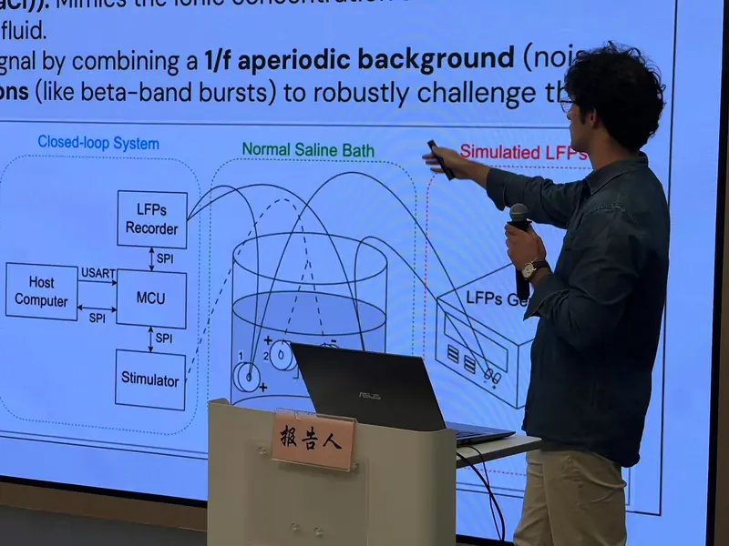
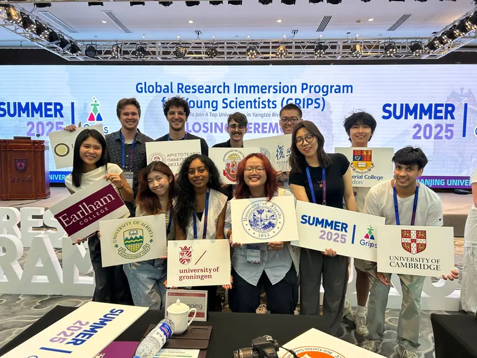

Fudan University, Shanghai
Selected for the Global Research Immersion Program for Young Scientists, with a recommendation from Prof. Gerard L. Coté (Texas A&M). I worked at the Neural and Intelligent Engineering Centre, ISTBI, under Prof. Shouyan Wang, Vice Dean of the institute.

In a five-person international team, we analysed clinical local field potential (LFP) recordings from a Parkinson's patient, with deep brain stimulation off and on.
I built the Python pipeline: beta oscillations (13–30 Hz) via Welch PSD, spectrograms and FOOOF, and 130 Hz DBS artifacts removed with a predict–blank–interpolate method.

What I gained: Neural signal processing (time-frequency, connectivity, entropy), closed-loop neuromodulation system design, and research in a multinational team.
